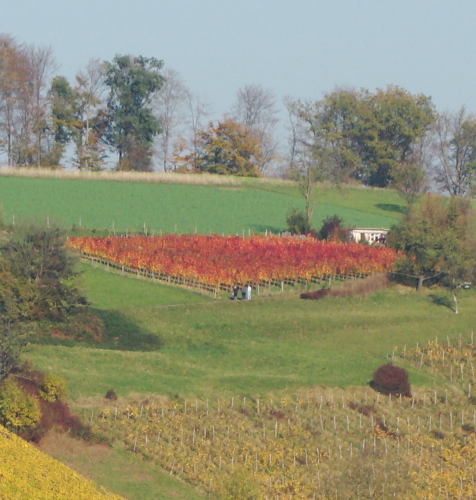

2005 wurden von den Familien Häusler und Schaffner in der Reblage "Auf Offenburg" in Muttenz 14 Aren Zweigelt angepflanzt. Seit Beginn steht unser Weingut für Leidenschaft und Präzision. Die erste Ernte erfolgte 2007, von Anfang an gekeltert vom renommierten Weingut Jauslin. Später wurde ca. ein Drittel der Fläche mit Diolinoir bestockt und die resultierende Cuvée konnte nationale Anerkennung erzielen: Auszeichnungen beim Grand Prix du Vin Suisse 2020 und 2021.
Unsere Werte spiegeln sich in der Qualitätsarbeit im Rebberg und der Zusammenarbeit mit dem Weingut Jauslin wider. 2024 läutete die Familie Häusler die Übergabe an die nächste Generation ein – für eine Zukunft, die auf Tradition und Innovation baut.
